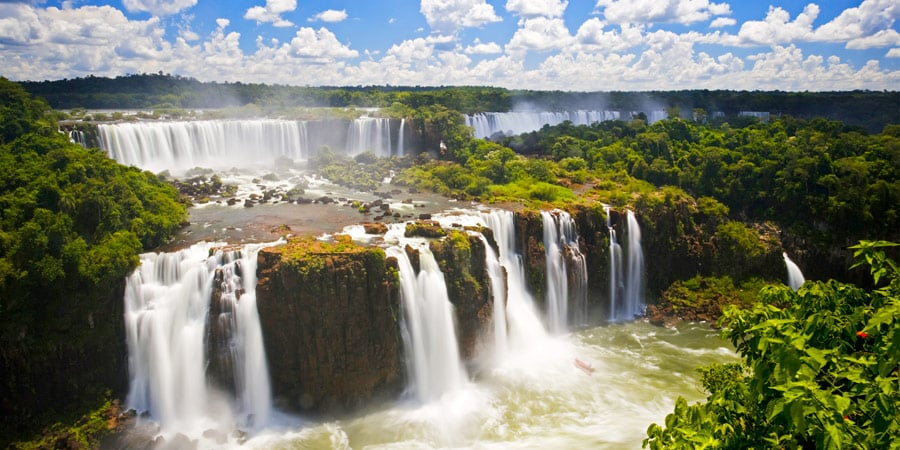

O desmatamento intensifica fenômenos negativos no meio ambiente e na vida das pessoas, afetando enchentes, temperatura e qualidade de vida.
O desmatamento resulta na perda de biodiversidade, destruição de habitats naturais e degradação do solo. O impacto é devastador para muitas espécies e para o equilíbrio do ecossistema.
É crucial tomar medidas para combater o desmatamento, promovendo práticas de preservação ambiental e conscientização para garantir um futuro mais sustentável para as próximas gerações.